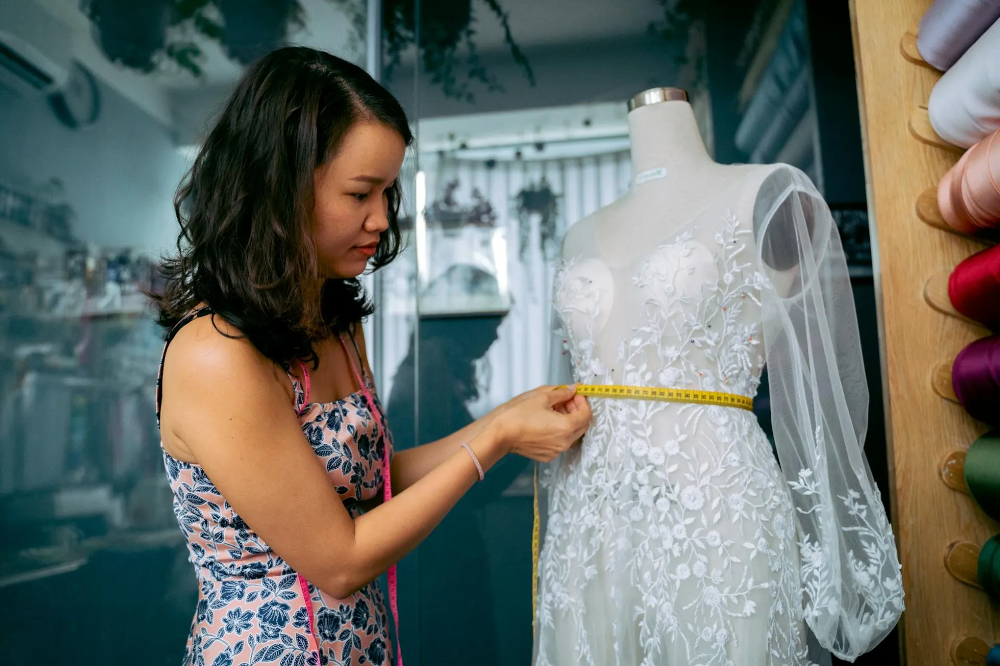

Line 01
Classic Eternal
The gown that established ALBA's reputation. A structured strapless bodice of hand-boned duchess satin, a swept cathedral train, and a back closing of thirty-six silk-covered buttons. Timeless beyond any trend or season.
SilhouetteBall gown with structured A-line skirt
Primary FabricDuchess satin, 280g/m² — Jacquard Français, Lyon
Train LengthCathedral, 280–300cm from waist
EmbellishmentCalais lace appliqué, seed pearl edging
Lead Time16–18 months